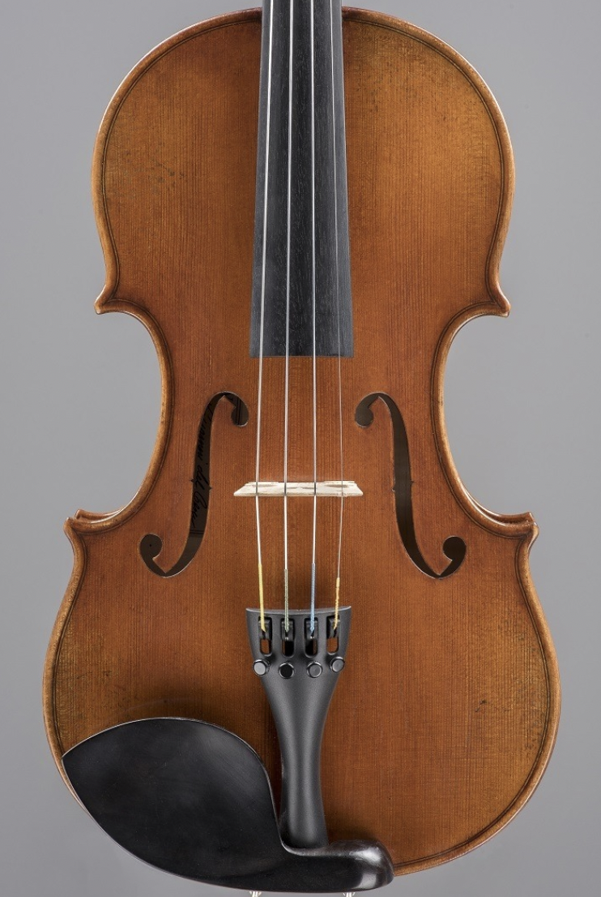

Great Composers
On this page you will be able to navigate to short bio pages of famous classical composers and learn about their musical careers.Click through the above links in order to explore more about some of histories greatest muscians.
